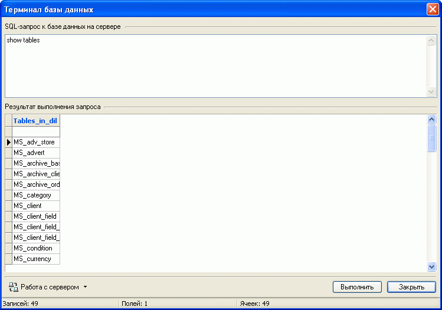

Для служебных целей возможна организация SQL- запросов к базе данных на сервере. Вызвать окно терминала базы данных можно из главного окна "Утилиты - Серверная база данных - Терминал базы данных". Работа терминала возможна при наличии связи с сервером.
